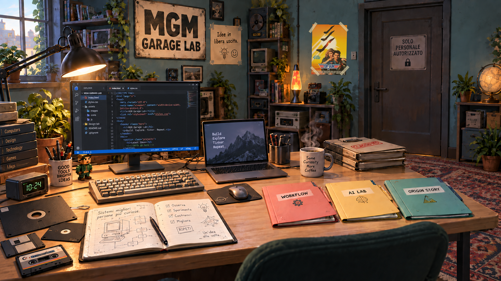

Idee in libera uscita
Cose che posso raccontare.
Esperimenti, appunti e pezzi del mio percorso. Questo garage è uno spazio personale: qui trovano posto le idee che posso condividere senza portarmi dietro segreti, clienti o materiale riservato.